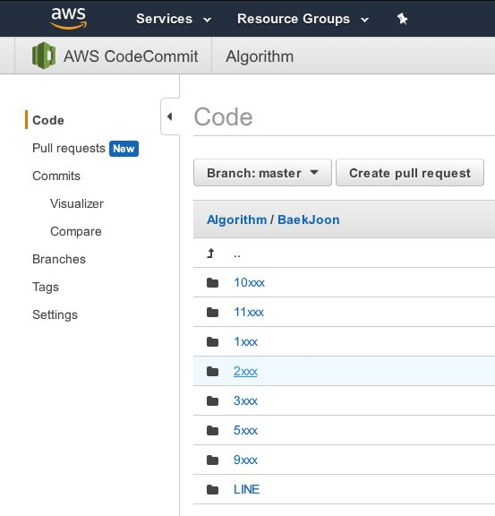

첫 취업(인턴) 테스트를 마치고 + α
1
대학교 3학년 말에 다 와서 첫 인턴 테스트를 본 것이 조금 늦지 않았나 생각한다. 그도 그럴 것이 일반 컴퓨터 공학부를 전공하고 있는 것도 아니고 (물론 방향성은 거의 비슷한 전자공학부인게 엄청 다행이지만) 진짜 죽기 살기로 코딩을 시작한 것도 1년 정도 밖에 되지 않았기 때문이다.
아무튼 4문제 중에서 2문제를 맞히고 나머지 두 개는 풀다가 타임 아웃. 하나는 문자열 처리 문제였고 또 하나는 동적 계획법을 이용한 문제였다. 동적 계획법을 이용한 문제는 수업 시간에 배운 것을 이용해서 풀려고 했었는데, 조건이 하나 더 붙은 탓인지 도중에 정신이 파스스 무너져서 테스트 케이스도 돌려보지 못했다.
만약 면접까지 못 간다고 해도, 인턴 테스트에 떨어졌다고 해서 아직 3학년이니까… 라고 자기합리화는 하지 않을 것이다. 진짜 앞으로는 연습에 연습 뿐이야.
2
JLPT 가 1주일 앞으로 다가오고 있다. 그런데 시험에 대해서 하나도 공부를 안해서 이번 시험은 그냥 성적 갱신용으로만 쳐야겠다. 2년 전의 점수가 138 점이었는데 그 때는 언어 지식이 만점을 받는 운빨이 있어서 그렇게 점수가 나왔던 것 같았고, 지금은 130 만 넘기는 걸로 목표를 잡아야 할 것 같다.
3

백준 등의 알고리즘 문제를 푼 솔루션 폴더를 AWS 의 CodeCommit 을 이용해 레포지터리화 시켰다. Credential Helper 가 AWS 자체의 것을 쓰는 탓에 git 을 다시 깔아야 했지만 어쨌든 이렇게 저렇게 AWS 을 활용할 수 있으니 좋다.
추기 : 기말고사를 끝내고 AWS 의 CodeCommit 을 만드는 방법 및 주의사항 등을 블로그에 정리해 올리고 싶다.
4
3학년 말인데 CS 전공의 학부생보다 프로젝트도 딱히 한 것이 없고… 물론 어플리케이션 프로젝트야 있다만 나는 Java 류가 아닌 C++ 을 주업으로 코딩을 하고 싶은데 마땅치가 않다. 게임쪽 회사를 간다고 해도 게임 쪽의 포트폴리오는 거의 전무한 상황. 인턴은 어플리케이션쪽. 그냥 어플리케이션 단으로 실무를 시작하는 게 좋을까? 밤이 깊어져간다. 까고 말해서 CS 교수님 한 분 붙잡고 나 어떡하냐고 보채고 싶다.
참고
http://docs.aws.amazon.com/codecommit/latest/userguide/how-to-connect.html#how-to-connect-http
http://docs.aws.amazon.com/codecommit/latest/userguide/getting-started-cc.html
http://docs.aws.amazon.com/ko_kr/codecommit/latest/userguide/troubleshooting.html#troubleshooting-windowshttps